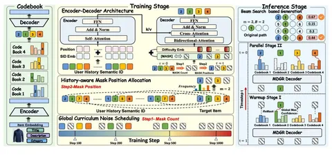

В прошлом посте мы упомянули статью MDGR. В ней от авторегрессивной генерации авторы уходят к параллельной реконструкции айтема через дискретную диффузию. Разберём детальнее, как это было сделано.
Сначала в работе перечисляют ограничения авторегрессивного подхода:
1) Нужно укладывать информацию об айтеме в строгую иерархию семантических ID, и это навязывает модели дополнительный inductive bias.
2) Генерация всегда идёт в фиксированном порядке, независимо от истории пользователя.
3) Эффективность на инференсе низкая, так как модель нужно прогонять по каждому семантическому токену.
Вместо этого предлагают поход, где генерация:
- агностична к порядку — генерируем семантик из любого кодбука первым, вторым или третьим, и это определяется историей пользователя;
- итеративно улучшает предсказания — следующие семантики уточняются с учётом сгенерированных;
- происходит параллельно, что ускоряет инференс.
Этим пунктам соответствует генерация на базе дискретной диффузии. Модель работает с замаскированными семантическими токенами и учится их расшумлять, восстанавливая по истории пользователя. В отличие от каузальной генерации здесь токены могут учитывать весь текущий контекст.
Но появляется вопрос, как использовать диффузионку в качестве кандидата-генератора. Она умеет расшумлять все токены сразу, но непонятно, как получить несколько объектов. Поэтому вводят гибридную схему с элементами beam search. Модель фиксирует самые уверенные токены и дальше — по следующим по уверенности семантикам — отбираются кандидаты.
Чтобы заалайнить диффузию под рекомендательный домен, вводят history-aware masking allocation strategy. В отличие от равномерного маскирования учитывается, что семантические токены разные по сложности. Поэтому чаще маскируются те, которые реже встречались в истории пользователя, — такие семантики для модели сложнее предсказать. То есть задачу обучения дополнительно усложняют и за счёт этого получают прирост качества по сравнению с равномерным маскированием.
Авторы используют параллельные семантики, то есть айтем представляется через несколько независимых кодбуков. Эмбеддинг разбивается на несколько подпространств, и каждое из них квантизируется отдельно, в результате получаем набор независимых семантических ID.
На инференсе к истории пользователя подклеиваются mask-токены по числу семантиков, которые модель должна расшумить. Сначала происходит варм-ап, на котором модель фиксирует один самый уверенный токен. Причём это может быть любая позиция, в зависимости от того, где модель больше уверена. После нескольких таких шагов модель переходит к параллельной генерации и за один проход может фиксировать сразу несколько семантиков.
Количество варм-ап-шагов и ширина beam search влияют на качество и скорость инференса. Если делать слишком мало шагов, качество падает, потому что семантики хуже обусловлены друг на друга. Если делать больше шагов, качество растёт, но при этом теряется выигрыш в скорости.
На офлайн-датасетах Amazon Books и Electronics модель показывает SOTA среди item- и semantic-based-подходов. При этом она достаточно небольшая модель: шестислойный трансформер с hidden size порядка 256. На онлайн-тестах репортят рост GMV и CTR.
@RecSysChannel
Разбор подготовил
